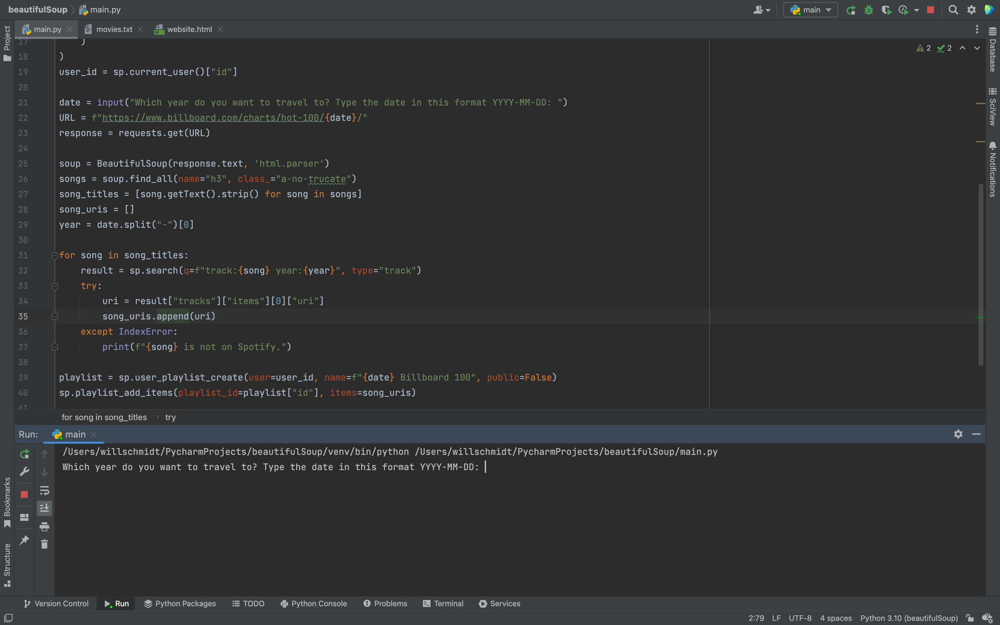
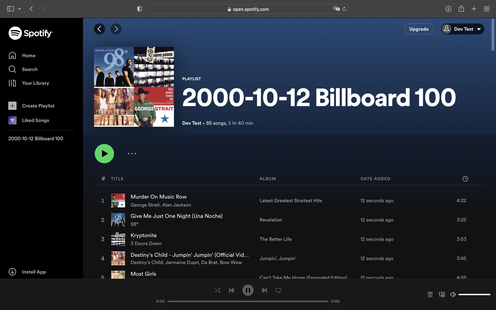

This project allows users to enter in a date and then the Billboard Top 100 songs from that date will be placed into a Spotify playlist.
Technologies used:
1. The first step is to enter in the date you want to look up the Billboard Top 100 songs for.
2. The program finds the Billboard Top 100 songs for the date entered by the user and adds them to a Spotify playlist.
